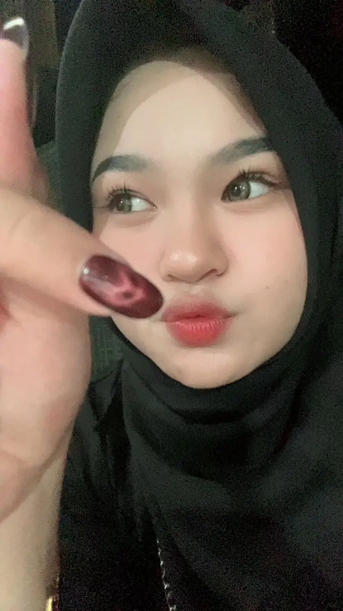

Nama Lengkap: Nur Meysha Putri
Nama Panggilan: Meysha
Tempat, Tanggal Lahir: Samarinda, 27 mei 2006
Jenis Kelamin: Perempuan
Alamat: Samarinda, Kalimantan Timur
Agama: -
Kewarganegaraan: Indonesia
saya adalah seorang mahasiswa dari universitas mulawarman pordi pendidikan komputer. saya sangat senang memasak, saya sukaa sekali kerja jadi selama sekolah dan kuliah saya pasti mencari kerja sampingan jadi pengalaman saya sudah banyak, saya anak yatim piatu yang ingin seekali membanggakan kakak saya yang sudah membesarr kan saya dengan jerih payah nya mencarikan uang untuk sekolah dan kuliah saya
Instagram: @maeiisaa